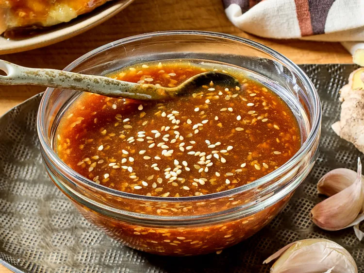

Teriyaki Marinade and Sauce
Home

Description
This teriyaki marinade is delicious as a marinade or a sauce. I looked long and hard for a good-flavored teriyaki marinade recipe that could be used for both. I found a few and modified them to this.
Ini adalah saus cocol atau saus marinasi teriyaki
Ingredients
- 1/2 cup soy sauce
- 2 tablespoons honey
- 2 tablespoons rice vinegar
- 2 tablespoons sesame oil
- 2 tablespoons brown sugar
- 2 tablespoons sesame seeds
- 2 cloves minced garlic
- 1 (1-inch) piece fresh ginger, grated
- 1/4 cup cold water
- 1 tablespoon cornstarch
Steps
- To make a marinade: Stir soy sauce, honey, rice vinegar, sesame oil, brown sugar, sesame seeds, garlic, and ginger together in a bowl until well combined.
- To make a sauce: Pour marinade mixture into a small saucepan and warm over medium-high heat. Whisk water and cornstarch together in a small bowl; add to marinade mixture. Bring to a boil, then reduce heat and simmer sauce, stirring frequently, until thickened, about 5 to 7 minutes